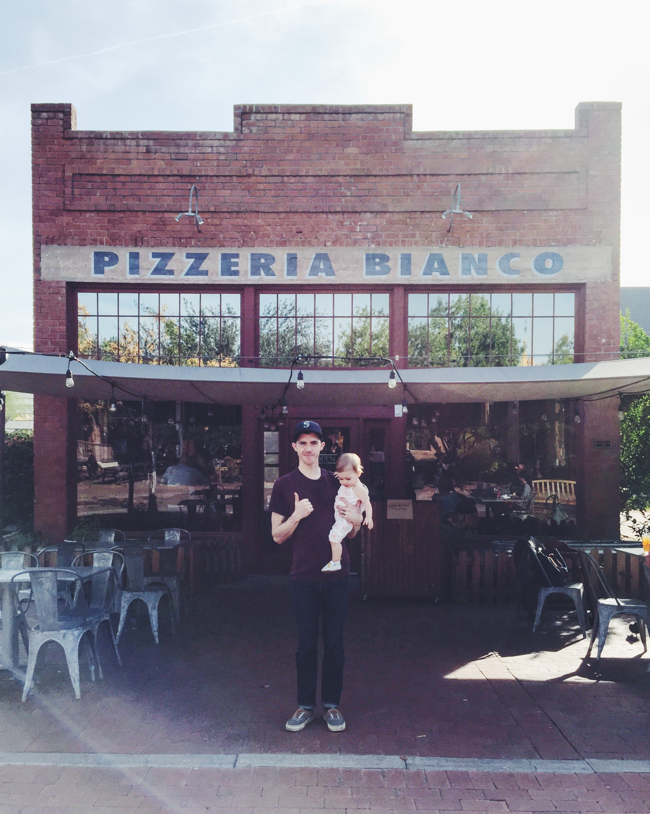

Welcome to my homage to pizza!
My name is Kevin and I am a big fan of pizza (making and eating). The photo above is of myself and my daughter standing in front of arguably the best pizza restaurant in the United States, Pizzeria Bianco. On this site you will find a brief history of pizza, imagery of different styles of pizza, and a list of some of the best pizzerias in the United States. Enjoy!